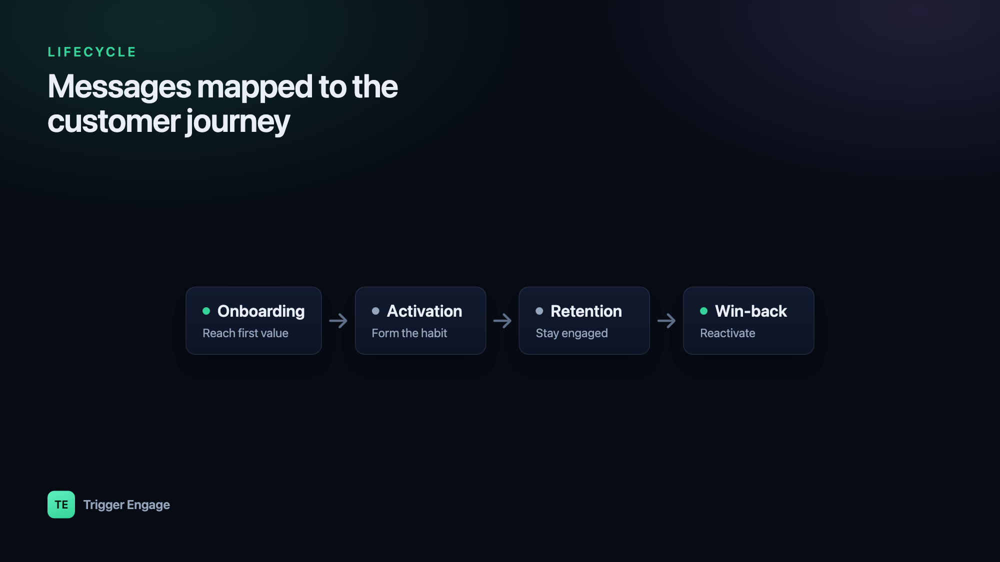

The best messaging isn't more messaging — it's the right message at the right moment. Lifecycle email sequences map each message to where someone actually is in their journey with your product, so a brand-new signup and a lapsed power user never get the same generic blast. Done well, they run themselves: a user does something (or pointedly does nothing), and the appropriate message goes out automatically.

Lifecycle emails vs one-off campaigns
A campaign is calendar-driven — you pick a date, write an email, and send it to a list. It's a broadcast. Lifecycle emails are the opposite: they're triggered by where a user is and what they've done. Nobody schedules them for Tuesday at 10am; they fire the moment a user signs up, hits a milestone, or goes quiet.
Triggered wins for three reasons:
- Relevance. The message matches the moment. A setup nudge only reaches people who haven't finished setup.
- Timing. It arrives when the user is thinking about your product, not when your calendar says so.
- Automation. You build the flow once and it serves every future user without anyone touching send.
Campaigns still have a place — a launch, a sale, a newsletter. But the messages that quietly drive activation and retention are almost always lifecycle emails.
The stages of the lifecycle
Most products share the same arc. A user arrives, gets set up, finds value, uses the product habitually, and — eventually — some drift away. Each stage has a job, and each job maps to a trigger and a goal.
| Stage | Trigger | Goal |
|---|---|---|
| Onboarding | Signup / account created | Reach the first "aha" moment |
| Activation | Signed up but key action not done | Complete the core action |
| Engagement / Retention | Ongoing usage, milestones, unused features | Build a habit, expand usage |
| Win-back | Inactivity (e.g. no activity in 30 days) | Reactivate the account |
| Referral / expansion | Sustained value / high engagement | Invite others, upgrade |
You don't need all five on day one. Onboarding and win-back alone cover the two moments where users are most likely to succeed or slip away.
The onboarding sequence
An onboarding email sequence starts the moment someone signs up, and its only real job is to get them to first value — the "aha" moment where the product clicks. Everything else is secondary. Here's a concrete four-message example for a hypothetical analytics tool where "aha" = connecting a data source and seeing a chart:
- Welcome — sent now. Confirm the account, set one expectation, and give a single obvious next step ("Connect your first data source").
- Setup nudge — day 1. If they haven't connected a source yet, show them exactly how, with a screenshot or 60-second video.
- Tips — day 3. Share the one or two things that make new users stick — a template, a starter dashboard, a common workflow.
- Check-in — day 7. A short, human "how's it going?" that invites a reply and offers help.
The critical detail: the goal stops the sequence. The instant a user connects a data source and sees their chart, they've activated — so they should drop out of the onboarding flow immediately. Nothing feels worse than a "still need help setting up?" email the day after you already succeeded.
Activation nudges
Activation overlaps with onboarding but deserves its own thinking. Plenty of users sign up, poke around, and never do the one action that makes your product worth keeping. An activation nudge targets exactly those people.
The pattern is a wait-for-event with a branch:
- Trigger on signup.
- Wait for the key event (created a project, invited a teammate, sent a first message — whatever "activated" means for you).
- If the event happens, exit — no nudge needed.
- If it doesn't happen within, say, 48 hours, send a focused nudge about that single action. Not a feature tour — one action.
Because the nudge only reaches people who genuinely haven't activated, it stays relevant and never talks down to users who already succeeded.
Retention & engagement
Once users are active, the job shifts from "get started" to "keep getting value." Retention emails are usage-aware rather than time-based:
- Usage-based nudges. "You've imported 500 rows — here's how to automate that import" reaches someone at the moment the tip is useful.
- Feature discovery. Surface a feature a user hasn't touched but that people with their usage pattern tend to love.
- Milestones. Celebrate the 10th session, the 100th message, the one-month mark. Milestones reinforce the habit and are great moments to ask for a review or referral.
The more precisely you can target these to actual behavior, the better they land. That precision comes from behavioral segmentation — grouping users by what they do, not who they are.
Win-back sequences
A win-back email is triggered by absence. The user was active and then went quiet — no logins, no key events — for some threshold like 30 days. The sequence's job is to give them a concrete reason to return: what's new, what they're missing, or a simple "we saved your work, pick up where you left off."
Here's the part teams underestimate: to trigger on inactivity, you need an audience that detects inactivity and keeps itself current. You can't manually maintain a list of "people who haven't done anything in 30 days" — it changes every single day as users lapse and others come back. That's a job for a self-updating behavioral segment: define "no key event in 30 days," and let the segment continuously add and remove people as their behavior changes. Your win-back sequence simply targets that segment.
Keep win-back short — two or three emails. If someone doesn't re-engage, escalating further usually costs you more in unsubscribes than it earns back.
How to actually build these
Strip away the marketing language and every sequence above is made of four primitives:
- Triggers — the events that start a flow (signup, key action, milestone) or the segment membership that reflects them.
- Delays / waits — "wait 1 day," or "wait up to 48 hours for event X."
- Branches — "did they activate? yes → exit, no → nudge."
- Goals — the exit condition that stops the sequence when its purpose is met.
Wiring these together in raw application code gets unwieldy fast, which is why a visual journey builder helps — you can see the whole flow, its waits, and its branches at a glance. Tools like TriggerEngage (open source and self-hostable) let you build these journeys visually and fire the underlying events straight from your app — see how to send event-based emails in Laravel for the wiring. The key idea: your application emits events ("user.signed_up", "project.created"), and the lifecycle logic lives in the journey builder, not scattered through your codebase.
Metrics that matter per stage
Opens and clicks tell you an email was noticed; they don't tell you the sequence worked. Measure each stage against its actual goal:
| Stage | Metric that matters |
|---|---|
| Onboarding | Onboarding → activation rate |
| Retention | Active users / repeat usage over time |
| Win-back | Reactivation rate |
| Overall | Conversions / goal completions |
Anchor every sequence to a goal completion, not an open rate. An onboarding flow with mediocre opens but a high activation rate is doing its job; one with great opens and low activation is not.